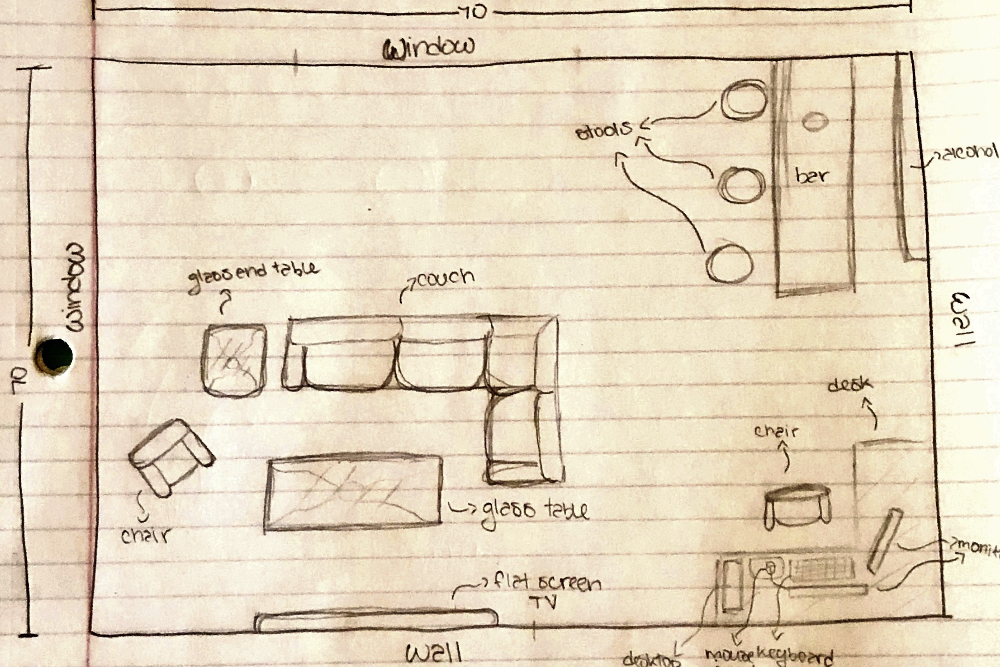

Project 1: The microwave interface
- This project is 30% of your final grade.
- Submission includes:
- A 1000 x 500 gif image of your
final interface which should be named p1.FirstnameLastname.gif.
- A youtube demonstration video of 3 minutes.
- A online demo link. (I can run the single pde file in Processing editor directly if the online link is not working.
- GitHub repository link. You should also name your git project p1.FirstnameLastname and Processing file p1.FirstnameLastname.pde
- Presentation web page (please see sample below),
-
All above are due at 11:59pm Friday, Feb 26 using Google form link (require log in to gmail).
- You can provide feedback to the presenting students via
Scoring link: https://demo-presentation.herokuapp.com/scoring
The feedback (ranging from 1 to 10 where 10 is the best) includes:
- Usability of the interface
- Visual appealing
- Interactivity
- Efforts
- Creativity
- Comments (optional)
Project description:
- The purpose of this project is to give you some practice with the material in the design of everyday things.
- We use micriwaves everyday. They have various designs for user controls but not all of them are designed at the best for users.
Here are some examples: Why Do Most Microwaves Have Such A Terrible User Interface?
To get a C, you need to:
- Find an microwave in the apartment/campus/hotel. Only one example for each student.
- Take photos of the control interface.
- Show a gif image of the control interface in operation.
- Find the issues with the current design and explain why it is bad.
To get a B, you need to:
- List your most common uses and other more rare uses of a microwave. Does the interface make doing those common things easier?
- Think about how the user interacts with the microwave. What is the common sequence of actions?
- How does the microwave support the user figure out how to make it work?
- How does the microwave provide feedback to the user?
- What are some common mistakes you can make with this current design?
- Suggest the improvements to make on the control interface. Sketch your solution and justify your design decisions.
Here is an example of Low-Fidelity Prototype sketching out the design (for a different purpose).

Now, imagine that you can have a touch screen on the microwave. To get a A, you need to:
- Come with your design for the touch screen? What is the screen size that you want?
- Design and implement interactive features
- Design and implement user feedback
- You can use any tools you want including Processing.
You can get extra credits if:
- Your design supports people with disabilities
- You provide extra useful information on the display interface.
- Your imagination ...
Project report on Github (readme file):
-
This report also serves as your project presentation.
The presentation is strictly 200 seconds.
-
Add a link to your interface/interactive features implementation. You can host it on your github page.
-
Describle your project via text,figures, and screenshots.
-
The instructions for report README sample file and presentation page can be found at: https://github.com/nnhuyen/new-hw1/blob/master/README
.md
In-class presentation:
-
The presentation is 200 seconds per person. Make sure that you are ready to talk right after the student in front of you is done.
-
The screen is going to automatically move to the next person after 200 seconds.
-
Please practice your talk. Show the basic functionality and emphasize on why your interface is different.
-
Example feedback from the audience: The visual design is appealing / User may find it difficult to understand
the function of (...) / Does the design look somewhat similar to another design?
Presentation list: (will be updated after the submission deadline)